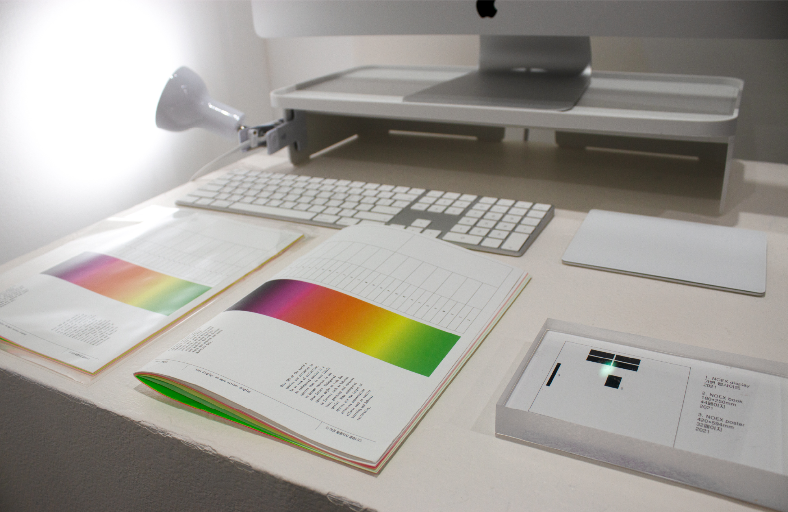
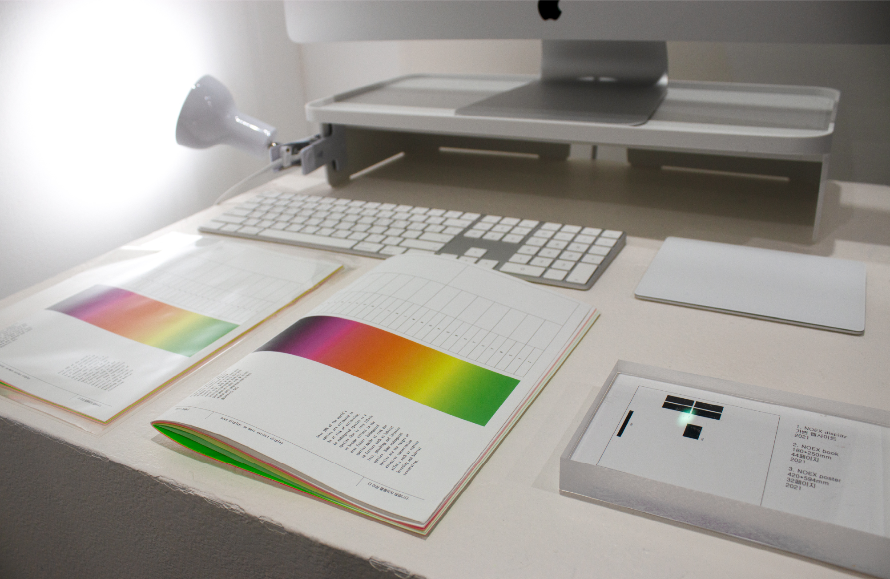

NOEX
no more extinct display
일련의 연구에 의하면 지구상에 등장했던 종의 99% 이상이 멸종했다. noex display는 멸종 위기 동물의 보존을 위해 읽는 행위보다는 보는 행위에 초점을 두어 멸종 위기 동물의 형태, 크기, 색상, 종적 특징을 적용한 제목용 서체이다.
이 제목용 서체들은 온라인 환경에 더불어, 콘텐츠를 보존하고 제한된 물리적 위치에 고정하는 인쇄라는 방식을 통해 나타내는 것을 목적으로 한다.
또한, 이미 멸종된 동물의 리스트를 포스터로 만들어 이미 멸종된, 멸종의 위기에 있는 동물 종을 가시화하여 생물 종 다양성의 손상 정도를 물성으로 직접 느낄 수 있도록 한다.
김현지 @qimhyunji 301603@naver.com

 
